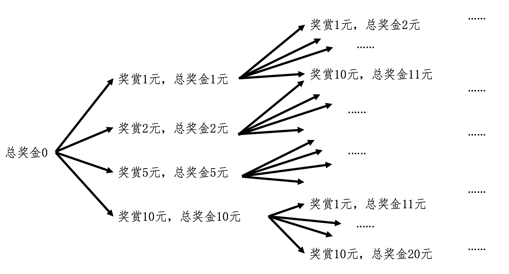

- 01 二进制：不了解计算机的源头，你学什么编程.md
- 02 余数：原来取余操作本身就是个哈希函数.md
- 03 迭代法：不用编程语言的自带函数，你会如何计算平方根？.md
- 04 数学归纳法：如何用数学归纳提升代码的运行效率？.md
- 05 递归（上）：泛化数学归纳，如何将复杂问题简单化？.md
- 06 递归（下）：分而治之，从归并排序到MapReduce.md
- 07 排列：如何让计算机学会“田忌赛马”？.md
- 08 组合：如何让计算机安排世界杯的赛程？.md
- 09 动态规划（上）：如何实现基于编辑距离的查询推荐？.md
- 10 动态规划（下）：如何求得状态转移方程并进行编程实现？.md
- 11 树的深度优先搜索（上）：如何才能高效率地查字典？.md
- 12 树的深度优先搜索（下）：如何才能高效率地查字典？.md
- 13 树的广度优先搜索（上）：人际关系的六度理论是真的吗？.md
- 14 树的广度优先搜索（下）：为什么双向广度优先搜索的效率更高？.md
- 15 从树到图：如何让计算机学会看地图？.md
- 16 时间和空间复杂度（上）：优化性能是否只是“纸上谈兵”？.md
- 17 时间和空间复杂度（下）：如何使用六个法则进行复杂度分析？.md
- 18 总结课：数据结构、编程语句和基础算法体现了哪些数学思想？.md
- 19 概率和统计：编程为什么需要概率和统计？.md
- 20 概率基础（上）：一篇文章帮你理解随机变量、概率分布和期望值.md
- 21 概率基础（下）：联合概率、条件概率和贝叶斯法则，这些概率公式究竟能做什么？.md
- 22 朴素贝叶斯：如何让计算机学会自动分类？.md
- 23 文本分类：如何区分特定类型的新闻？.md
- 24 语言模型：如何使用链式法则和马尔科夫假设简化概率模型？.md
- 25 马尔科夫模型：从PageRank到语音识别，背后是什么模型在支撑？.md
- 26 信息熵：如何通过几个问题，测出你对应的武侠人物？.md
- 27 决策树：信息增益、增益比率和基尼指数的运用.md
- 28 熵、信息增益和卡方：如何寻找关键特征？.md
- 29 归一化和标准化：各种特征如何综合才是最合理的？.md
- 30 统计意义（上）：如何通过显著性检验，判断你的A_B测试结果是不是巧合？.md
- 31 统计意义（下）：如何通过显著性检验，判断你的A_B测试结果是不是巧合？.md
- 32 概率统计篇答疑和总结：为什么会有欠拟合和过拟合？.md
- 33 线性代数：线性代数到底都讲了些什么？.md
- 34 向量空间模型：如何让计算机理解现实事物之间的关系？.md
- 35 文本检索：如何让计算机处理自然语言？.md
- 36 文本聚类：如何过滤冗余的新闻？.md
- 37 矩阵（上）：如何使用矩阵操作进行PageRank计算？.md
- 38 矩阵（下）：如何使用矩阵操作进行协同过滤推荐？.md
- 39 线性回归（上）：如何使用高斯消元求解线性方程组？.md
- 40 线性回归（中）：如何使用最小二乘法进行直线拟合？.md
- 41 线性回归（下）：如何使用最小二乘法进行效果验证？.md
- 42 PCA主成分分析（上）：如何利用协方差矩阵来降维？.md
- 43 PCA主成分分析（下）：为什么要计算协方差矩阵的特征值和特征向量？.md
- 44 奇异值分解：如何挖掘潜在的语义关系？.md
- 45 线性代数篇答疑和总结：矩阵乘法的几何意义是什么？.md
- 46 缓存系统：如何通过哈希表和队列实现高效访问？.md
- 47 搜索引擎（上）：如何通过倒排索引和向量空间模型，打造一个简单的搜索引擎？.md
- 48 搜索引擎（下）：如何通过查询的分类，让电商平台的搜索结果更相关？.md
- 49 推荐系统（上）：如何实现基于相似度的协同过滤？.md
- 50 推荐系统（下）：如何通过SVD分析用户和物品的矩阵？.md
- 51 综合应用篇答疑和总结：如何进行个性化用户画像的设计？.md
- 导读：程序员应该怎么学数学？.md
- 开篇词 作为程序员，为什么你应该学好数学？.md
- 数学专栏课外加餐（一） 我们为什么需要反码和补码？.md
- 数学专栏课外加餐（三）：程序员需要读哪些数学书？.md
- 数学专栏课外加餐（二） 位操作的三个应用实例.md
- 结束语 从数学到编程，本身就是一个很长的链条.md
05 递归（上）：泛化数学归纳，如何将复杂问题简单化？
你好，我是黄申。上一节的结尾，我们用递归模拟了数学归纳法的证明。同时，我也留下了一个问题：既然递归的函数值返回过程和基于循环的迭代法一致，我们直接用迭代法不就好了，为什么还要用递归的数学思想和编程方法呢？这是因为，在某些场景下，递归的解法比基于循环的迭代法更容易实现。这是为什么呢？我们继续来看舍罕王赏麦的故事。
如何在限定总和的情况下，求所有可能的加和方式？
舍罕王和他的宰相西萨·班·达依尔现在来到了当代。这次国王学乖了，他对宰相说：“这次我不用麦子奖赏你了，我直接给你货币。另外，我也不用棋盘了，我直接给你一个固定数额的奖赏。”
宰相思考了一下，回答道：“没问题，陛下，就按照您的意愿。不过，我有个小小的要求。那就是您能否列出所有可能的奖赏方式，让我自己来选呢？假设有四种面额的钱币，1元、2元、5元和10元，而您一共给我10元，那您可以奖赏我1张10元，或者10张1元，或者5张1元外加1张5元等等。如果考虑每次奖赏的金额和先后顺序，那么最终一共有多少种不同的奖赏方式呢？”
让我们再次帮国王想想，如何解决这个难题吧。这个问题和之前的棋盘上放麦粒有所不同，它并不是要求你给出最终的总数，而是在限定总和的情况下，求所有可能的加和方式。你可能会想，虽然问题不一样，但是求和的重复性操作仍然是一样的，因此是否可以使用迭代法？好，让我们用迭代法来试一下。
我还是使用迭代法中的术语，考虑k=1,2,3,…,n的情况。在第一步，也就是当n=1的时候，我们可以取四种面额中的任何一种，那么当前的奖赏就是1元、2元、5元和10元。当n=2的时候，奖赏的总和就有很多可能性了。如果第一次奖赏了1元，那么第二次有可能取1、2、5元三种面额（如果取10，总数超过了10元，因此不可能）。
所以，在第一次奖赏1元，第二次奖赏1元后，总和为2元；第一次奖赏1元，第二次奖赏2元后，总和为3元；第一次奖赏1元，第二次奖赏5元后，总和为6元。好吧，这还没有考虑第一次奖赏2元和5元的情况。我来画个图，从图中你就能发现这种可能的情况在快速地“膨胀”。

你应该能看到，虽然迭代法的思想是可行的，但是如果用循环来实现，恐怕要保存好多中间状态及其对应的变量。说到这里，你是不是很容易就想到计算编程常用的函数递归？
在递归中，每次嵌套调用都会让函数体生成自己的局部变量，正好可以用来保存不同状态下的数值，为我们省去了大量中间变量的操作，极大地方便了设计和编程。
不过，这里又有新的问题了。之前用递归模拟数学归纳法还是非常直观的。可是，这里不是要计算一个最终的数值，而是要列举出所有的可能性。那应该如何使用递归来解决呢？上一节，我只是用递归编程体现了数学归纳法的思想，但是如果我们把这个思想泛化一下，那么递归就会有更多、更广阔的应用场景。
如何把复杂的问题简单化？
首先，我们来看，如何将数学归纳法的思想泛化成更一般的情况？数学归纳法考虑了两种情况：
初始状态，也就是n=1的时候，命题是否成立；
如果n=k-1的时候，命题成立。那么只要证明n=k的时候，命题也成立。其中k为大于1的自然数。
将上述两点顺序更换一下，再抽象化一下，我写出了这样的递推关系：
假设n=k-1的时候，问题已经解决（或者已经找到解）。那么只要求解n=k的时候，问题如何解决（或者解是多少）；
初始状态，就是n=1的时候，问题如何解决（或者解是多少）。
我认为这种思想就是将复杂的问题，每次都解决一点点，并将剩下的任务转化成为更简单的问题等待下次求解，如此反复，直到最简单的形式。回到开头的例子，我们再将这种思想具体化。
假设n=k-1的时候，我们已经知道如何去求所有奖赏的组合。那么只要求解n=k的时候，会有哪些金额的选择，以及每种选择后还剩下多少奖金需要支付就可以了。
初始状态，就是n=1的时候，会有多少种奖赏。
有了这个思路，就不难写出这个问题的递归实现。我这里列一个基本的实现。
import java.util.ArrayList;
public class Lesson5_1 {
public static long[] rewards = {1, 2, 5, 10}; // 四种面额的纸币
/**
* @Description: 使用函数的递归（嵌套）调用，找出所有可能的奖赏组合
* @param totalReward-奖赏总金额，result-保存当前的解
* @return void
*/
public static void get(long totalReward, ArrayList<Long> result) {
// 当totalReward = 0时，证明它是满足条件的解，结束嵌套调用，输出解
if (totalReward == 0) {
System.out.println(result);
return;
}
// 当totalReward < 0时，证明它不是满足条件的解，不输出
else if (totalReward < 0) {
return;
} else {
for (int i = 0; i < rewards.length; i++) {
ArrayList<Long> newResult = (ArrayList<Long>)(result.clone()); // 由于有4种情况，需要clone当前的解并传入被调用的函数
newResult.add(rewards[i]); // 记录当前的选择，解决一点问题
get(totalReward - rewards[i], newResult); // 剩下的问题，留给嵌套调用去解决
}
}
}
}
我们测试一下总金额为10元的时候，有多少种解。
public static void main(String[] args) {
int totalReward = 10;
Lesson5_1.get(totalReward, new ArrayList<Long>());
}
最终，程序运行后大致是这种结果：
[1, 1, 1, 1, 1, 1, 1, 1, 1, 1]
[1, 1, 1, 1, 1, 1, 1, 1, 2]
[1, 1, 1, 1, 1, 1, 1, 2, 1]
[1, 1, 1, 1, 1, 1, 2, 1, 1]
[1, 1, 1, 1, 1, 1, 2, 2]
...
[5, 5]
[10]
这里面每一行都是一种可能。例如第一行表示分10次奖赏，每次1元；第二行表示分9次奖赏，最后一次是2元；以此类推。最终结果的数量还是挺多的，一共有129种可能。试想一下，如果总金额为100万的话，会有多少种可能啊！
这个代码还有几点需要留意的地方，我再来解释一下：
1.由于一共只有4种金额的纸币，所以无论是n=1的时候还是n=k的时候，我们只需要关心这4种金额对组合产生的影响，而中间状态和变量的记录和跟踪这些繁琐的事情都由函数的递归调用负责。
2.这个案例的限制条件不再是64个棋格，而是奖赏的总金额，因此判断嵌套调用是否结束的条件其实不是次数k，而是总金额。这个金额确保了递归不会陷入死循环。
3.我这里从奖赏的总金额开始，每次嵌套调用的时候减去一张纸币的金额，直到所剩的金额为0或者少于0，然后结束嵌套调用，开始返回结果值。当然，你也可以反向操作，从金额0开始，每次嵌套调用的时候增加一张纸币的金额，直到累计的金额达到或超过总金额。
小结
递归和循环其实都是迭代法的实现，而且在某些场合下，它们的实现是可以相互转化的。但是，对于某些应用场景，递归确实很难被循环取代。我觉得主要有两点原因：
第一，递归的核心思想和数学归纳法类似，并更具有广泛性。这两者的类似之处体现在：将当前的问题化解为两部分：一个当前所采取的步骤和另一个更简单的问题。
1.一个当前所采取的步骤。这种步骤可能是进行一次运算（例如每个棋格里的麦粒数是前一格的两倍），或者做一个选择（例如选择不同面额的纸币），或者是不同类型操作的结合（例如今天讲的赏金的案例）等等。
2.另一个更简单的问题。经过上述步骤之后，问题就会变得更加简单一点。这里“简单一点”，指运算的结果离目标值更近（例如赏金的总额），或者是完成了更多的选择（例如纸币的选择）。而“更简单的问题”，又可以通过嵌套调用，进一步简化和求解，直至达到结束条件。
我们只需要保证递归编程能够体现这种将复杂问题逐步简化的思想，那么它就能帮助我们解决很多类似的问题。
第二，递归会使用计算机的函数嵌套调用。而函数的调用本身，就可以保存很多中间状态和变量值，因此极大的方便了编程的处理。
正是如此，递归在计算机编程领域中有着广泛的应用，而不仅仅局限在求和等运算操作上。在下一节中，我将介绍如何使用递归的思想，进行“分而治之”的处理。
思考题
一个整数可以被分解为多个整数的乘积，例如，6可以分解为2x3。请使用递归编程的方法，为给定的整数n，找到所有可能的分解（1在解中最多只能出现1次）。例如，输入8，输出是可以是1x8, 8x1, 2x4, 4x2, 1x2x2x2, 1x2x4, ……
欢迎在留言区交作业，并写下你今天的学习笔记。你可以点击“请朋友读”，把今天的内容分享给你的好友，和他一起精进。
© 2019 - 2023 Liangliang Lee. Powered by gin and hexo-theme-book.